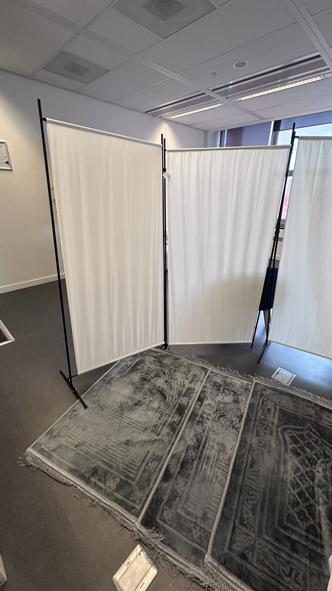
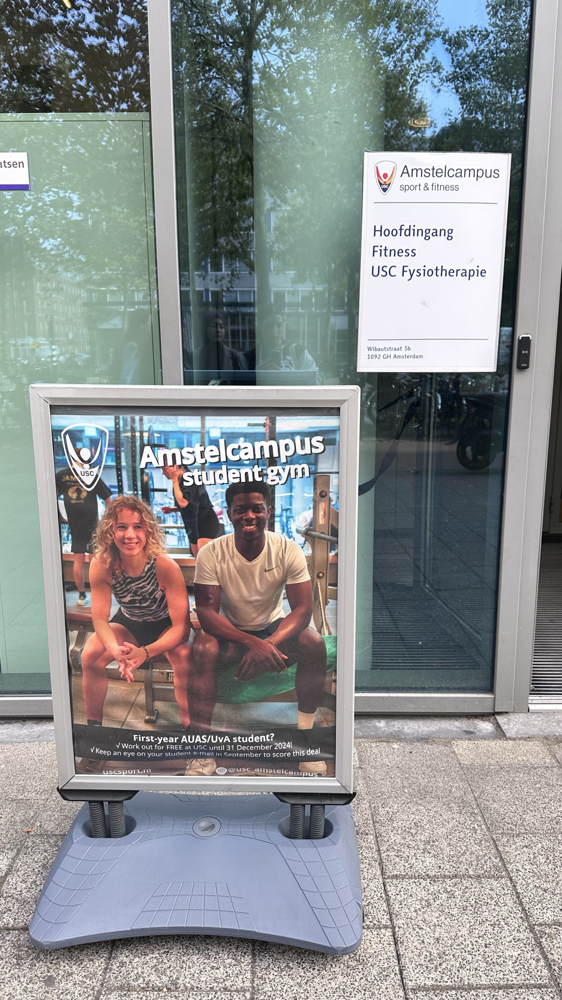

HVA studenten winkel Wibauthuis

De HvA Studentenshop in het Wibauthuis is voor ons studenten een vertrouwde plek. Of we nu snel een pen, schrift of wat HvA-merchandise nodig hebben, hier vinden we het altijd. Het is klein maar fijn, en de vriendelijke medewerkers helpen ons altijd snel. Tussen de colleges door is het een fijn rustpunt in de drukte van het Wibauthuis, waar we even op adem kunnen komen en klaar zijn voor de volgende uitdaging.
Stilte ruimte Theo Thijssenhuis
De stilteruimte in het Theo Thijssenhuis is voor ons een ideale plek om ons even terug te trekken uit de drukte van de dag. Hier kunnen we in alle rust studeren, mediteren of gewoon een moment van stilte vinden. Het is een fijne ruimte waar we even kunnen opladen, zonder afleiding, zodat we daarna weer vol energie verder kunnen met onze studies. Voor ons is het een waardevolle plek waar stilte en concentratie centraal staan.
Gym Muller-Lulofshuis
De gym in het Muller-Lulofshuis is voor ons de perfecte plek om te sporten en te ontspannen na een dag vol colleges. Hier kunnen we werken aan onze conditie, krachttraining doen of deelnemen aan groepslessen. Het is een moderne ruimte met alle voorzieningen die we nodig hebben om fit te blijven, en het voelt als een fijne uitlaatklep tijdens onze studie. Voor ons is de gym niet alleen een plek om fysiek actief te zijn, maar ook om even mentaal te resetten en met nieuwe energie verder te gaan.